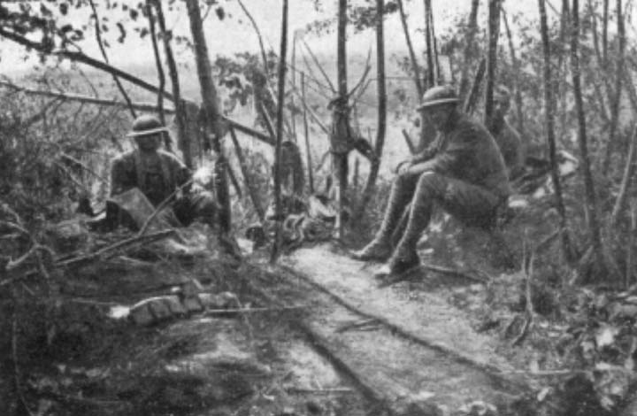
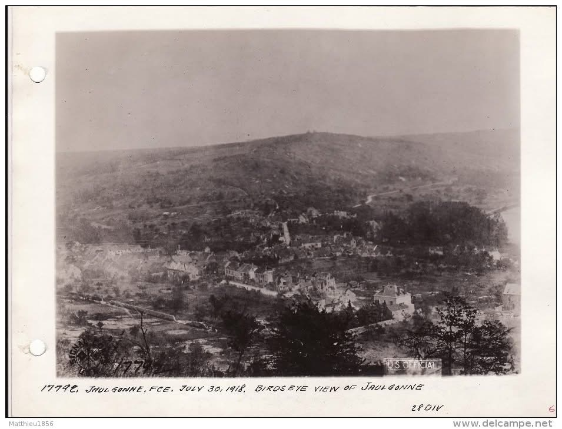
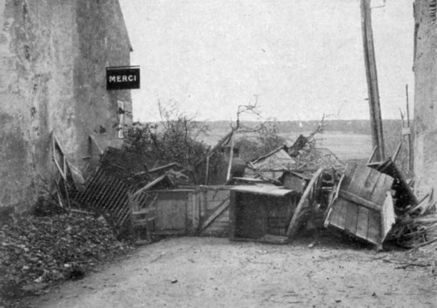
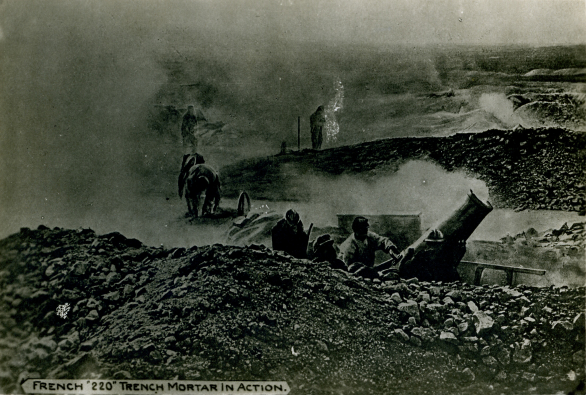
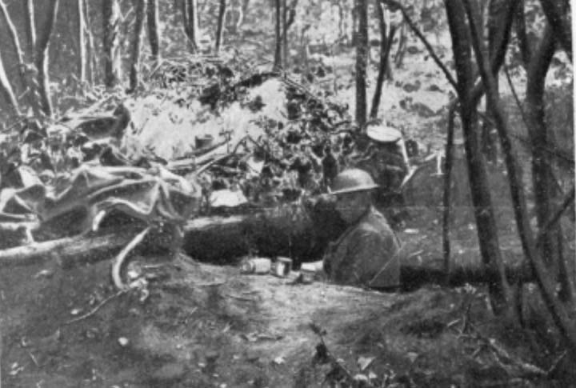

La difficile bataille dans les bois au nord de Jaulgonne — 22–31 juillet 1918
Contexte
Après la Marne, la forêt
La libération de Jaulgonne le 22 juillet 1918 n'est pas la fin des combats dans le secteur. Sur les hauteurs boisées au nord du village, dans la Forêt de Ris et jusqu'au village du Charmel, les combats se prolongent dix jours de plus. Ce sont des combats de forêt — épuisants, sans repères visuels clairs, où les unités s'affrontent à courte distance dans les sous-bois. Un type de combat pour lequel les soldats américains, encore inexpérimentés dans la guerre européenne, devront apprendre sur le tas.
Carte IGN / Géoportail — La Forêt de Ris, massif boisé au nord de Jaulgonne (point orange). On distingue : les Franquets (nord-ouest), Barzy-sur-Marne (est), Rosay, et la Forêt de Ris elle-même qui s'étend vers l'Érolle au nord-est. C'est dans ce massif que se déroulent les combats du 22 au 31 juillet 1918.
Les sources disponibles
Cette page s'appuie sur quatre sources primaires : les mémoires du Général de Mondésir (commandant le 38e Corps d'Armée), le journal de marche de la 73e Division d'Infanterie, le récit du 42e Régiment d'Artillerie de Campagne (artillerie de la 4e DI), et le rapport officiel américain U.S. Army in the World War (CMH Pub 77-5).
8–13 juil.
Bombardements ypérite préventifs
22 juil.
73e DI franchit la Marne, entre en forêt
25 juil.
4e RI US prend Le Charmel
27 juil.
4e DI occupe la forêt de Ris
31 juil.
Bois Meunière — dernière résistance allemande
8–13 juillet 1918 · Préparation
La forêt de Ris avant la bataille : 30 000 obus à l'ypérite
Dès le début de juillet, le général de Mondésir avait observé que les tirs d'artillerie française sur les bois au nord de la Marne « amenaient de fréquentes explosions de petits dépôts de munitions » — preuve que les Allemands y concentraient une artillerie importante en vue d'une offensive. Pour contrer ce dispositif, Mondésir ordonne à partir du 8 juillet des tirs massifs à l'ypérite (gaz moutarde) sur les bois de la rive droite.
« À partir du 8 juillet, et pendant trois jours (les 8, 9 et 13), je fis exécuter, suivant un programme bien étudié, des tirs nombreux à ypérite dans les bois de la rive droite et sur certains ravins. Je fis lancer 30 000 obus de 75 et 1 000 de 105, chargés en ypérite. »
— Général de Mondésir, commandant le 38e Corps d'Armée
L'efficacité de ces tirs préventifs est confirmée par un prisonnier du 6e Régiment de Grenadiers, capturé le 15 juillet. Dans son interrogatoire, il « a constaté de grosses pertes de l'artillerie dans la forêt de Ris et […] a vu en passant dans le ravin d'Argentol, une batterie dont les quatre pièces étaient démolies ». Mondésir avait réussi à empêcher de sortir des bois « tout un équipage de pont léger » que les Allemands y avaient préparé pour le franchissement de la Marne.
Ypérite et chlore — l'arme chimique dans la forêt
L'ypérite (gaz moutarde) persistait plusieurs jours dans les sous-bois, obligeant les troupes à porter des masques à gaz même lors des mouvements nocturnes. Dans une forêt dense, l'évacuation par le vent était minimale. Les unités allemandes stationnarisant dans la forêt de Ris subirent donc des pertes importantes avant même le début de la contre-offensive alliée. La nuit du 14 au 15 juillet, les Allemands répondirent à leur tour avec des gaz Croix Bleue (diphosgène) et ypérite sur les positions alliées.
22–25 juillet 1918
La 73e Division d'Infanterie — le premier franchissement
La 73e Division d'Infanterie française (346e, 356e et 367e RI) est à la droite de la 3e Division US lors de la contre-offensive. Le 16 juillet elle contre-attaque depuis Saint-Eugène en direction de Courtemont, limitant l'expansion des têtes de pont allemandes.
Le 22 juillet, après la libération de Jaulgonne par les Américains, la 73e DI franchit la Marne à Sauvigny et à Courtemont. Elle entre alors dans la forêt de Ris par le sud et y mène des combats de poursuite pendant trois jours. Le 25 juillet, après avoir participé à la sécurisation de la forêt, elle est retirée du front et remplacée par la 4e Division d'Infanterie.


À gauche : soldats dans un bois ravagé par les combats, été 1918. À droite : vue aérienne du secteur, 30 juillet 1918
Composition de la 73e DI
346e, 356e et 367e Régiments d'Infanterie · 239e Régiment d'Artillerie (75) · un groupe du 138e RAL (artillerie lourde) · Appartient à la 6e Armée (général Degoutte) · Secteur : droite de la 3e Division US
22–25 juillet 1918
La bataille pour Le Charmel — trois jours de combats
Le Charmel est un village sur les crêtes boisées à environ 9 km au nord-est de Jaulgonne. Sa prise est indispensable pour contrôler les accès nord vers la Vesle. La bataille pour ce village dure trois jours et illustre parfaitement la difficulté des combats dans ce secteur boisé.
22 juillet — 13h15
Le 1er Bataillon du 38e RI US atteint Le Charmel à 13h15, après avoir libéré Jaulgonne le matin même. Mais il est sans soutien : son artillerie n'a pas encore pu franchir la Marne à temps. Sous la pression allemande, le bataillon doit reculer vers Jaulgonne en fin d'après-midi.
24 juillet
Les 4e, 7e et 30e Régiments d'Infanterie US (qui ont relevé le 38e) approchent les abords du village. Ils ne peuvent pas s'en emparer : une résistance organisée les repousse. La nuit du 23-24 juillet a vu les Allemands se replier et mettre en place de nouvelles lignes défensives.
25 juillet — après-midi
Le 4e Régiment d'Infanterie US s'empare définitivement du Charmel dans l'après-midi. Mais un nid de mitrailleuse installé dans le Château du Charmel (à 500 mètres du village) continue de tirer sur les rues du village, empêchant tout mouvement à découvert. Ce n'est qu'en soirée que la position sera réduite.
« Au Charmel, l'ennemi parut avoir l'intention de nous arrêter sérieusement. Les 4e et 30e régiments de la 3e D.U.S. se distinguèrent. »
— Général de Mondésir, 38e Corps d'Armée

À gauche : barricade allemande à la sortie du Charmel vers Courmont, sous la plaque Michelin — 27 juillet 1918. Le village venait d'être pris par le 4e RI US le 25 juillet. À droite : soldats en position dans les combats de lisière.
27 juillet 1918
La 4e Division d'Infanterie occupe la forêt de Ris
La 4e Division d'Infanterie française (120e et 147e RI, 9e et 18e Bataillons de Chasseurs à Pied) relève la 73e DI. Le 27 juillet au soir, son artillerie — le 42e Régiment d'Artillerie de Campagne — franchit la Marne sur des ponts de bateaux à Sauvigny et Courtemont-Rozay. Les 1er et 2e groupes passent à Sauvigny, le 3e groupe à Courtemont-Rozay.
« La 4e D.I. a occupé la Forêt de Ris, le 42e est remis à sa disposition et passe la Marne le soir sur des ponts de bateaux : 1er et 2e groupes à Sauvigny, 3e groupe à Courtémont-Rozay. L'ennemi semble retranché à la lisière sud du Bois Meunière. »
— 42e Régiment d'Artillerie de Campagne, Journal de marche (27 juillet 1918)
Les Allemands se sont repliés jusqu'à la lisière sud du Bois Meunière (à environ 3 km au nord-est du Charmel). Ils y ont établi une solide ligne défensive : des trous de tirailleur garnis de mitrailleuses, protégés par des réseaux de fil de fer (réseau Brun), appuyés par une artillerie qui tire des obus explosifs et toxiques sur les lignes avancées alliées. C'est là que se livre la dernière grande résistance allemande dans ce secteur.
28–31 juillet 1918
Le Bois Meunière — quatre jours de résistance
28 juillet
Attaque générale de la 4e DI. L'artillerie du 42e RAC ouvre la voie. Le 18e BCP atteint le « Télégraphe détruit » mais doit ramener ses éléments avancés sous la pression. À 15h00, une brigade américaine à la gauche de la 4e DI s'empare de Ronchères. La lisière du Bois Meunière reste tenue par l'ennemi — mitrailleuses à 100-200 m en avant du bois, artillerie active avec obus explosifs et toxiques. La 7e batterie du 42e RAC est « assez sérieusement bombardée ».
29–30 juillet
« Plusieurs tentatives de l'infanterie sur le Bois Meunière avec ou sans artillerie restent sans résultat. Le Bois Meunière est bombardé jour et nuit par les batteries. » (42e RAC). Deux jours d'attaques répétées et de bombardements continus sans succès : la position est trop solide.
31 juillet — matin
À l'aube, les reconnaissances entrent dans le bois « sans difficulté » — les Allemands se sont retirés pendant la nuit. L'infanterie suit. Les groupes d'artillerie bondissent en avant. Les batteries arrivent à temps pour tirer sur des colonnes allemandes visibles en retraite — les cadavres trouvés les jours suivants témoignent de l'efficacité du tir. Le 18e BCP envoie ses félicitations. Le général Lebrun, commandant le 3e CA, complimente le 42e RAC pour la rapidité de son mouvement.
La ligne du Bois Meunière — une défense organisée
Le 42e RAC décrit la position allemande : « La lisière du Bois Meunière est solidement organisée ; des trous disséminés à 100 ou 200 mètres au sud du bois sont garnis de mitrailleuses protégées par un réseau Brun ; l'artillerie ennemie paraît également assez puissante, elle tire vigoureusement sur nos lignes avancées des obus explosifs et toxiques. » Ce n'est pas une simple position de retardement — c'est une ligne défensive préparée.

Équipement et conditions de combat dans les secteurs boisés — été 1918
Tactique · Témoignage direct
« Les Américains ne connaissaient pas la tactique des bois »
Le général de Mondésir, dans ses mémoires, note avec franchise les difficultés tactiques des soldats américains dans le combat de forêt. Ce témoignage, de la part d'un officier qui les admirait profondément, est d'autant plus précieux :
« Les Américains désorientés ne connaissaient pas la tactique à employer sous le couvert des bois. Des officiers du 10e Chasseurs allèrent placer eux-mêmes des mitrailleuses américaines à proximité immédiate de l'ennemi. L'un d'eux en s'y employant, le lieutenant de Tournadre, fils d'un général de mes amis, fut tué, ainsi qu'un maréchal des logis. Il venait de faire 20 prisonniers. »
— Général de Mondésir, commandant le 38e Corps d'Armée
Ce passage illustre la réalité de la coopération franco-américaine dans ces combats : des officiers de cavalerie française guidant physiquement des fantassins américains dans les sous-bois, au péril de leur vie. Le lieutenant de Tournadre est l'un des innombrables soldats dont le sacrifice reste méconnu parce qu'il s'est produit au coin d'un bois, loin des grandes batailles.
Le rapport américain (CMH Pub 77-5) décrit de son côté les tactiques de retardement allemandes dans ces forêts : des tireurs de mitrailleuse isolés « ouvraient le feu depuis des buissons, des tranchées camouflées, et des positions dans les arbres » — une « guerre indienne avec des armes modernes ». Même de petits groupes pouvaient causer des pertes considérables.

Conditions de combat dans les bois — soldats américains en position et blessés. Ces photographies, prises sur le front de la 2e Marne, illustrent la réalité des combats dans ce secteur, été 1918
1er août 1918 et après
La poursuite vers l'Ourcq et la Vesle
Après la prise du Bois Meunière le 31 juillet, la résistance allemande dans ce secteur s'effondre. Le 2 août, « le repli ennemi a été plus considérable », la cavalerie patrouille au-delà de Cohan, l'ennemi incendie ses approvisionnements — signe d'une retraite précipitée. Le 3 août, les Allemands repassent la Vesle à Fismes, mettant fin à la 2e Bataille de la Marne.
L'artillerie française — le 42e RAC — poursuit jusqu'à la Vesle et au-delà. Le colonel commandant le 38e RI US lui adresse ses félicitations pour sa « brillante coopération ». Des prisonniers de quatre divisions différentes sont capturés dans ce secteur, dont des éléments de la 39e Division et de la 5e Division de la Garde allemande — signe que l'ennemi avait engagé ses meilleures unités pour tenter d'arrêter l'avance alliée.
4
Divisions allemandes capturées dans le secteur
5e DG
5e Division de la Garde (prisonniers)
3 août
Allemands repassent la Vesle
Ordre de bataille
Les unités engagées dans la Forêt de Ris
🇫🇷
73e Division d'Infanterie
Forêt de Ris · 22–25 juillet 1918
346e, 356e et 367e RI. Franchit la Marne à Sauvigny et Courtemont le 22 juillet. Première unité française à combattre dans la forêt de Ris. Retirée du front le 25 juillet après avoir sécurisé la zone d'entrée dans le massif. Unité de la 6e Armée (Degoutte), 38e CA (Mondésir).
🇫🇷
4e Division d'Infanterie
Forêt de Ris · Bois Meunière · 27 juil. – 2 août 1918
120e et 147e RI, 9e et 18e BCP. Relève la 73e DI. Occupe officiellement la forêt de Ris le 27 juillet. Mène l'assaut du Bois Meunière (28-31 juillet). Soutenue par le 42e RAC. Sous commandement du 3e CA (général Lebrun).
🇺🇸
4e Régiment d'Infanterie US — 3e Division
Le Charmel · 25 juillet 1918
S'empare définitivement du Charmel dans l'après-midi du 25 juillet, après deux tentatives infructueuses les 22 et 24 juillet. Position dangereuse : nid de mitrailleuse dans le château à 500 m continue de tirer sur les rues. Mondésir : « les 4e et 30e régiments de la 3e D.U.S. se distinguèrent. »
🇫🇷
42e Régiment d'Artillerie de Campagne
Artillerie de la 4e DI · 27 juil. – 4 août 1918
Franchit la Marne sur ponts de bateaux à Sauvigny et Courtemont-Rozay le 27 juillet au soir. Appui des 9e BCP, 120e et 147e RI et 18e BCP dans les combats du Bois Meunière. Complimenté par le général Lebrun et le colonel du 38e RI US pour sa coopération.
🇩🇪
Unités allemandes — Forêt de Ris
Défense · juillet 1918
Éléments de la 36e Division (5e et 6e Grenadiers), renforcés par des éléments de la 39e Division et de la 5e Division de la Garde. Avaient utilisé la forêt comme dépôt logistique depuis mai 1918. Dernière ligne de résistance au Bois Meunière (28-31 juillet).